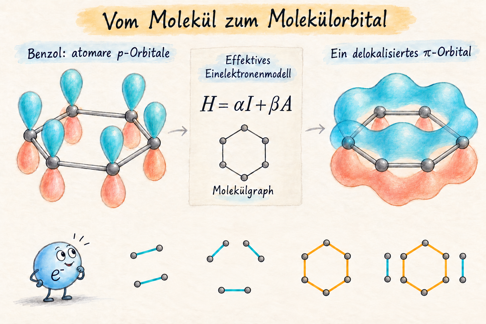
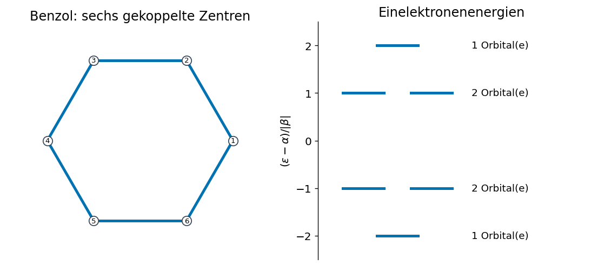
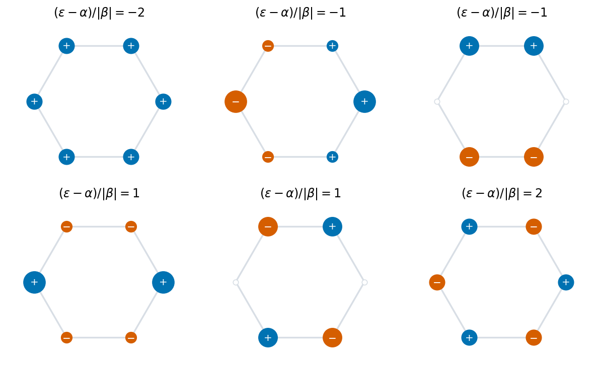
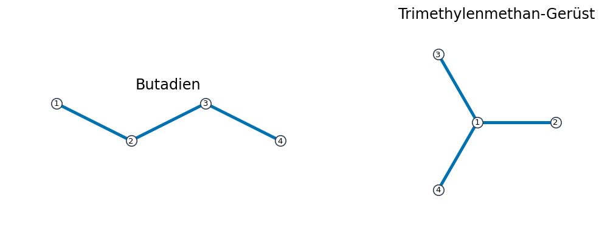
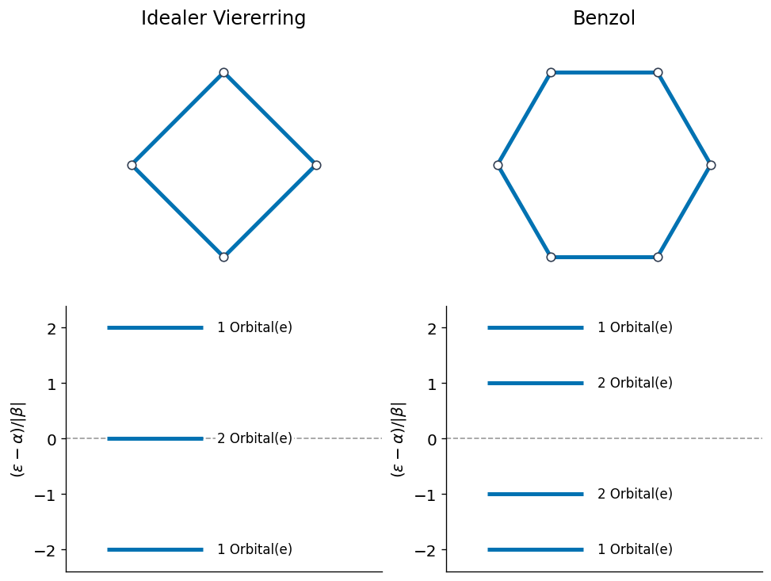
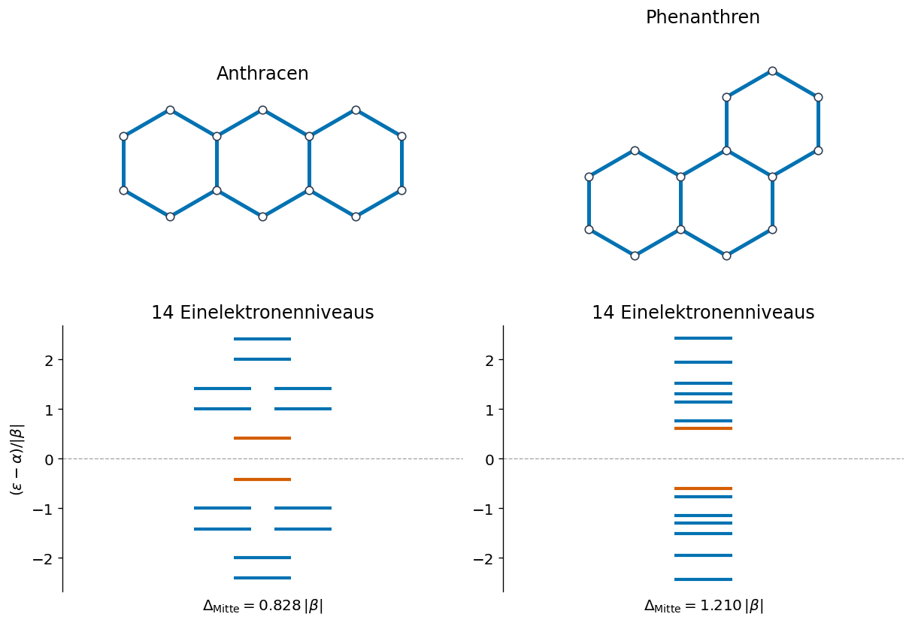
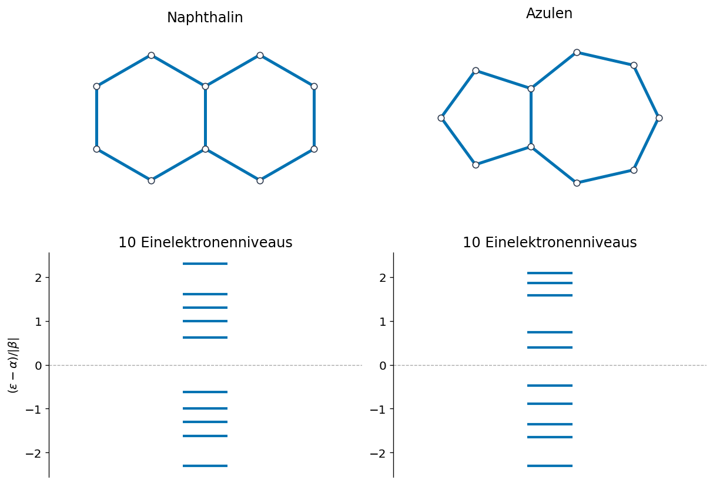
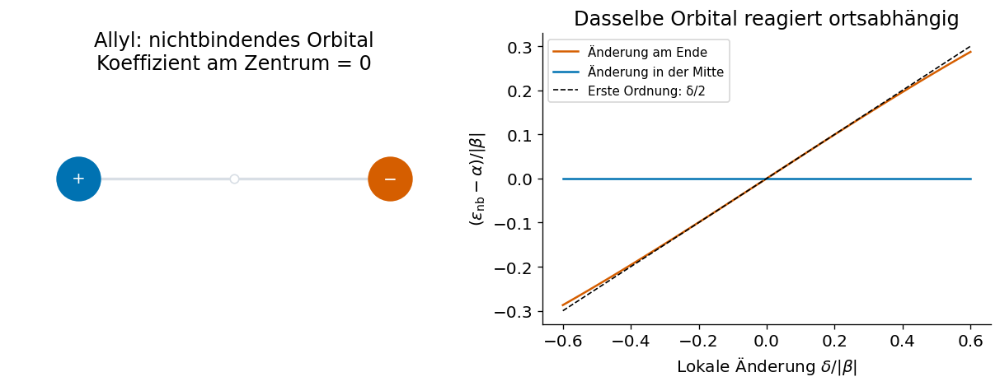
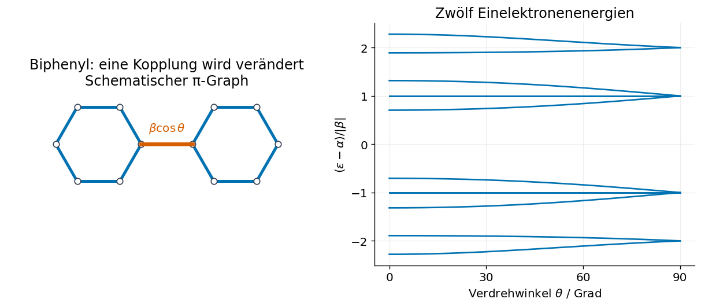

Ausblick: Molekülorbitale#

Vom atomaren p-Orbital zum Molekülorbital: schematische Darstellung des niedrigsten π-Orbitals von Benzol. Die Orbitalfarben kennzeichnen die Vorzeichen der Wellenfunktion. Die kleinen Graphen geben einen Vorgeschmack auf den Satz von Sachs.
Beim Heliumatom haben wir gesehen, wie viel Aufwand schon die korrelierte Bewegung zweier Elektronen verlangt. Wie können wir dann überhaupt größere Moleküle behandeln? In vielen Verfahren versuchen wir, das Vielteilchenproblem näherungsweise auf effektive Einelektronenprobleme zurückzuführen. Ihre Lösungen heißen Molekülorbitale.
Hier verfolgen wir diese Idee mit einem besonders einfachen Modell: der Hückel-Näherung für konjugierte Kohlenwasserstoffe.
Wir betrachten zunächst die möglichen Zustände eines Elektrons im effektiven Modell. Wie mehrere Elektronen diese Orbitale besetzen und welche Gesamtenergie daraus folgt, wird später mit Spin und Pauli-Prinzip geklärt. Das Einelektronenspektrum selbst können wir bereits jetzt berechnen und chemisch interpretieren.
1. Vom Vielteilchenproblem zum effektiven Hamiltonoperator#
Für eine festgehaltene Kerngeometrie suchen wir näherungsweise Lösungen von
Der effektive Operator soll die Wirkung der Kerne und der übrigen Elektronen in vereinfachter Form enthalten. Dies ist im Allgemeinen keine exakte Zerlegung des wechselwirkenden Vielteilchenproblems. In späteren Verfahren wird das effektive Feld aus den Orbitalen selbst bestimmt!
Ein Molekülorbital kann sich über mehrere Atome erstrecken. Als Ansatz verwenden wir eine Linearkombination atomzentrierter Basisfunktionen, kurz LCAO (linear combination of atomic orbitals):
Wir multiplizieren die Gleichung mit \(\chi_i(\mathbf r)^*\) und integrieren über den gesamten Raum. Damit ergibt sich
wobei die Matrixelemente durch die Integrale
gegeben sind.
Damit wird aus einer Differentialgleichung das verallgemeinerte Matrix-Eigenwertproblem \(H\mathbf c_a=\varepsilon_a S\mathbf c_a\). Die Koeffizienten beschreiben die Orbitalform, der Eigenwert die zugehörige Einelektronenenergie.
2. Die Hückel-Näherung#
Wir beginnen mit einem ebenen konjugierten Kohlenwasserstoff. Das \(\sigma\)-Gerüst legt die Geometrie fest. Für das \(\pi\)-System behalten wir ein senkrecht zur Molekülebene orientiertes \(p_z\)-Orbital pro beteiligtem Kohlenstoffatom. Wasserstoffatome und das \(\sigma\)-Gerüst werden nicht als eigene Basisfunktionen aufgenommen.
Die Modellannahmen lauten:
Wir behandeln die Basis als orthonormal: \(S_{ij}\approx\delta_{ij}\). Damit gilt \(\sum_i|c_{ia}|^2=1\).
Alle Kohlenstoffzentren besitzen dieselbe diagonale Energie \(H_{ii}=\alpha\).
Zwischen direkt benachbarten Zentren des konjugierten Netzes setzen wir \(H_{ij}=\beta\); alle übrigen Kopplungen sind null.
\(\alpha\) legt den Energienullpunkt des Modells fest, \(|\beta|\) die Energieskala. Bei konsistent gewählten Phasen der \(p_z\)-Basisfunktionen wählen wir die übliche Konvention \(\beta<0\). Gleichphasige Beiträge an benachbarten Zentren können dadurch die Energie senken. \(S_{ij}=0\) und \(H_{ij}\ne0\) für Nachbarn sind eigenständige Modellannahmen: Die Orthogonalität der Basis bedeutet nicht, dass die Hamiltonmatrix diagonal ist.
Diese Annahmen und ihre Anwendung auf Benzol sind beispielsweise in den Hückel-Vorlesungsnotizen des MIT dargestellt. Wir verwenden hier nur den Einelektronenteil des Modells.
3. Benzol: sechs Zentren, sechs Molekülorbitale#
Wir nummerieren die sechs Kohlenstoffzentren entlang des Rings. Die Hückel-Matrix lautet
Alle sechs Verbindungen werden gleich behandelt. Wir müssen also nicht zwischen zwei alternierenden Doppelbindungsmustern wählen. In der Gleichung für ein einzelnes Zentrum stehen nur seine beiden Nachbarn:
Ein periodisches Muster \(c_i\propto e^{\mathrm i q i}\) liefert
Die sechs Energien sind damit, von unten nach oben,
Entartung bedeutet hier: Verschiedene linear unabhängige Orbitale besitzen denselben Eigenwert.
Eine kleine Matrixrechnung#
Die Beispiele benötigen NumPy, Matplotlib und SymPy. Eine Kantenliste gibt an, welche Zentren gekoppelt sind. Im Python-Code beginnen die Indizes bei null, in den Abbildungen bei eins. Für die Rechnung setzen wir \(\alpha=0\), \(\beta=-1\); alle dargestellten Energien stehen damit in Einheiten von \(|\beta|\) relativ zu \(\alpha\).
%matplotlib inline
import numpy as np
import matplotlib.pyplot as plt
import sympy as sp
from itertools import combinations
from collections import Counter
from IPython.display import display, HTML
plt.rcParams.update({"font.size": 12, "figure.dpi": 120,
"axes.spines.top": False, "axes.spines.right": False})
blue, orange, grey = "#0072B2", "#D55E00", "#D8DEE5"
lam = sp.Symbol("lambda")
def adjacency(n, edges):
A = np.zeros((n, n), dtype=int)
for i, j in edges:
A[i, j] = A[j, i] = 1
return A
benzene_edges = [(i, (i + 1) % 6) for i in range(6)]
angles = np.arange(6) * np.pi / 3
benzene_xy = np.column_stack((np.cos(angles), np.sin(angles)))
A_benzene = adjacency(6, benzene_edges)
energies, orbitals = np.linalg.eigh(-A_benzene)
print("(ε − α) / |β| =", np.round(energies, 6))
(ε − α) / |β| = [-2. -1. -1. 1. 1. 2.]
Die folgende Zeichenfunktion wird später auch für die Sachs-Graphen benutzt. Graue Linien zeigen das zugrunde liegende Netz. Ausgewählte Einzelkanten sind blau, ausgewählte Zykluskanten orange. Die Farben kennzeichnen mathematische Teile des Graphen, keine chemischen Bindungsordnungen.
def draw_graph(ax, xy, edges, chosen=None, labels=False):
for i, j in edges:
ax.plot(*xy[[i, j]].T, color=grey, lw=2, zorder=1)
highlight = chosen is not None
chosen = edges if chosen is None else chosen
degree = Counter(v for edge in chosen for v in edge)
for i, j in chosen:
color = orange if highlight and degree[i] == degree[j] == 2 else blue
ax.plot(*xy[[i, j]].T, color=color, lw=3, zorder=2)
for i, point in enumerate(xy):
active = i in degree or labels
ax.scatter(*point, s=110 if labels else 40, zorder=3,
facecolor="white", edgecolor="#344054" if active else grey)
if labels:
ax.text(*point, str(i + 1), ha="center", va="center", fontsize=8)
ax.set_aspect("equal")
ax.margins(0.22)
ax.axis("off")
fig, axes = plt.subplots(1, 2, figsize=(9, 4), layout="constrained")
draw_graph(axes[0], benzene_xy, benzene_edges, labels=True)
axes[0].set_title("Benzol: sechs gekoppelte Zentren")
for energy in np.unique(np.round(energies, 8)):
multiplicity = np.count_nonzero(np.isclose(energies, energy))
for centre in np.linspace(-0.3, 0.3, multiplicity) if multiplicity > 1 else [0]:
axes[1].plot([centre - 0.18, centre + 0.18], [energy, energy], color=blue, lw=3)
axes[1].text(0.65, energy, f"{multiplicity} Orbital(e)", va="center", fontsize=11)
axes[1].set(xlim=(-0.7, 1.65), ylim=(-2.5, 2.5), xticks=[], yticks=range(-2, 3),
ylabel=r"$(\varepsilon-\alpha)/|\beta|$", title="Einelektronenenergien")
axes[1].spines["bottom"].set_visible(False)
plt.show()

Wie sehen die Orbitale aus?#
Für reproduzierbare Bilder wählen wir reelle Sinus- und Kosinusmuster. Innerhalb eines entarteten Paars sind auch andere orthonormale Linearkombinationen möglich; eine numerische Diagonalisierung muss daher nicht genau dieselben Bilder liefern.
In den folgenden Draufsichten steht jeder Kreis für den Koeffizienten eines \(p_z\)-Orbitals. Seine Fläche ist proportional zu \(|c_i|^2\), Farbe und Zeichen geben das Vorzeichen an. Wir zeigen also Koeffizienten in der atomaren Basis, keine räumlichen Elektronendichteflächen. Die unteren Lappen der \(p_z\)-Orbitale hätten jeweils das umgekehrte Vorzeichen. Ein globaler Vorzeichenwechsel des gesamten Orbitals ändert den Zustand nicht.
modes = np.array([np.ones(6), np.cos(angles), np.sin(angles),
np.cos(2 * angles), np.sin(2 * angles), (-1.)**np.arange(6)])
modes /= np.linalg.norm(modes, axis=1)[:, None]
mode_energy = np.array([-2, -1, -1, 1, 1, 2])
assert np.allclose(-A_benzene @ modes.T, modes.T * mode_energy)
fig, axes = plt.subplots(2, 3, figsize=(10, 6), layout="constrained")
for ax, coefficients, energy in zip(axes.flat, modes, mode_energy):
draw_graph(ax, benzene_xy, benzene_edges, chosen=[])
for point, value in zip(benzene_xy, coefficients):
if abs(value) > 1e-10:
ax.scatter(*point, s=2000 * value**2, color=blue if value > 0 else orange, zorder=4)
ax.text(*point, "+" if value > 0 else "−", color="white", ha="center", va="center", zorder=5)
ax.set_title(fr"$(\varepsilon-\alpha)/|\beta|={energy}$")
plt.show()

Im tiefsten Orbital haben alle benachbarten Beiträge dasselbe Vorzeichen. Im höchsten Orbital wechseln die Vorzeichen an jeder Kante. Weshalb dies energetisch relevant ist, zeigt für einen normierten Koeffizientenvektor unmittelbar
Jede ungerichtete Kante wird in dieser Summe einmal gezählt. Wegen \(\beta<0\) senken gleichphasige Nachbarbeiträge den Erwartungswert. Der Elektronenzustand gewinnt dabei seine Form aus dem gesamten zusammenhängenden Netz.
4. Vom Kohlenwasserstoff zum Graphen#
Das gleiche Rezept funktioniert für Ketten, Ringe, verzweigte und kondensierte \(\pi\)-Systeme. Wir ersetzen jedes beteiligte \(p\)-Orbital durch einen Knoten und jede berücksichtigte Nachbarkopplung durch eine Kante. Der so entstehende Graph \(G=(V,E)\) beschreibt das konjugierte Netz. Eine Kante bedeutet hier Kopplung, nicht „Doppelbindung“; auch eine formal einfache Bindung zwischen zwei konjugierten Zentren gehört dazu.
Die Adjazenzmatrix ist
Damit lautet die Hückel-Matrix besonders einfach
Ist \(A\mathbf c_a=\lambda_a\mathbf c_a\), dann ist derselbe Vektor ein Molekülorbital mit \(\varepsilon_a=\alpha+\beta\lambda_a\). Die Graphenstruktur bestimmt somit die dimensionslosen Energien und die Koeffizienten. Weil \(\beta<0\), gehört der größte Adjazenz-Eigenwert zur kleinsten Orbitalenergie.
Dieses Vorgehen lässt sich auf die konjugierten Netze von Kohlenwasserstoffen verallgemeinern. Seine Voraussetzungen bleiben aber sichtbar: gleiche Zentren, ein geeignetes \(p\)-Orbital pro Knoten und einheitliche Nachbarkopplungen. Unterschiedliche Bindungslängen oder verdrehte Gruppen führen zu gewichteten Kanten. Bei mehreren unterschiedlich orientierten \(\pi\)-Systemen, etwa in Cumulenen, muss auch die Basis entsprechend erweitert werden.
Das Hückel-Polynom#
Wir definieren das charakteristische Polynom des Graphen als
Seine Nullstellen sind die \(\lambda_a\). Mit dieser Vorzeichenkonvention gilt
Für Benzol erhalten wir
Die Faktoren reproduzieren die sechs Eigenwerte einschließlich ihrer Entartungen. Können wir die Koeffizienten direkt aus der Zeichnung des Molekülgraphen bestimmen?
benzene_polynomial = sp.Matrix(A_benzene).charpoly(lam).as_expr()
display(sp.Eq(sp.Function("P_Benzol")(lam), sp.factor(benzene_polynomial)))
5. Der Satz von Sachs: ein Beweis in Bildern#
Warum kennt eine Determinante die Struktur eines Moleküls? Wir verfolgen einen einzelnen Term von \(\det(\lambda I-A)\) und übersetzen ihn in eine Zeichnung.
5.1 Von Matrixeinträgen zu Wegen#
Eine Auswahl pro Zeile und Spalte. Ein Determinantenterm wählt in jeder Zeile und Spalte genau einen Matrixeintrag, multipliziert diese Einträge und erhält das Vorzeichen der zugehörigen Permutation. Terme mit einem Nulleintrag fallen weg; die übrigen Einträge stehen auf der Diagonale oder gehören zu Molekülkanten. Zeichnen wir für \(M_{ij}\) einen Pfeil \(i\to j\), besitzt jeder Knoten genau einen einlaufenden und einen auslaufenden Pfeil. Daher entstehen nur getrennte geschlossene Wege.

Drei Bausteine. Ein Fixpunkt liefert \(\lambda\). Ein Hin- und Rückweg entlang einer Kante liefert einschließlich des Permutationsvorzeichens \(-1\). Ein längerer Zyklus liefert ebenfalls \(-1\) je Umlaufrichtung, also zusammen \(-2\). Die gezeichnete Schleife am Fixpunkt steht für einen Diagonaleintrag, nicht für eine Molekülkante.

Gewichte multiplizieren und Beiträge addieren. Ohne Fixpunkte und Pfeilrichtungen bleibt ein Sachs-Teilgraph: einzelne Kanten und einfache Zyklen, die keine Knoten gemeinsam haben. Enthält er \(m\) Kantenkomponenten und \(c\) Zyklen auf insgesamt \(k\) Knoten, liefert er
Für den Koeffizienten \(a_k\) addieren wir die Gewichte aller Sachs-Teilgraphen \(S\in\mathcal S_k\) auf \(k\) Knoten:
Verschiedene Lagen im nummerierten Graphen zählen getrennt; der leere Graph liefert \(\lambda^N\).

Kanten dürfen weggelassen werden, auch wenn ihre Endknoten ausgewählt sind: Bei Naphthalin zählt beispielsweise der äußere Zehnerzyklus ohne die gemeinsame innere Kante.
5.2 Benzol: drei Beiträge zum konstanten Term#
Für \(a_6\) müssen alle sechs Knoten bedeckt sein. Das gelingt durch zwei vollständige Kantenpaarungen und den Sechserzyklus: \(a_6=-1-1-2=-4\). Eine disjunkte Kantenpaarung heißt Matching; ein vollständiges Matching entspricht hier einer Kekulé-Zeichnung.

Die übrigen Koeffizienten erhalten wir genauso. Der folgende kleine Zähler probiert alle Kantenauswahlen und behält nur disjunkte Kanten und Zyklen. Die Hilfsfunktionen sind im Buch aufklappbar; bei großen Graphen wächst der Aufwand wie \(2^{|E|}\).
benzene_sachs = sachs_subgraphs(6, benzene_edges)
show_counts(benzene_sachs)
assert sp.expand(sachs_polynomial(6, benzene_sachs) - benzene_polynomial) == 0
| k | m | c | Anzahl | Gewicht je Graph | Beitrag zu aₖ |
|---|---|---|---|---|---|
| 0 | 0 | 0 | 1 | +1 | +1 |
| 2 | 1 | 0 | 6 | -1 | -6 |
| 4 | 2 | 0 | 9 | +1 | +9 |
| 6 | 0 | 1 | 1 | -2 | -2 |
| 6 | 3 | 0 | 2 | -1 | -2 |
Die Tabelle ergibt \(P_{\mathrm{Benzol}}=\lambda^6-6\lambda^4+9\lambda^2-4\) und stimmt exakt mit der Matrixrechnung überein. Der Satz stammt von Sachs (1964); seine Verbindung zur Molekülorbitaltheorie untersuchten unter anderem Graovac et al. (1972).
6. Was verrät der Graph über die Orbitale?#
Ein Koeffizient \(a_k\) sammelt Muster auf \(k\) Zentren. Mit \(b\) Kanten, \(M_j\) Auswahlen von \(j\) disjunkten Kanten und \(C_j\) einfachen Zyklen der Länge \(j\) gilt:
Koeffizient |
Welche Struktur wird gezählt? |
|---|---|
\(a_2=-b\) |
Nachbarkopplungen |
\(a_3=-2C_3\) |
Dreierzyklen |
\(a_4=M_2-2C_4\) |
Disjunkte Kantenpaare und Viererzyklen |
\(a_5=-2C_5\), ohne Dreierzyklen |
Fünferzyklen |
\(a_6=-M_3-2C_6\), ohne Dreier- und Viererzyklen |
Kantentripel und Sechserzyklen |
Schon \(a_2\) hat eine spektrale Bedeutung: \(\sum_i(\varepsilon_i-\alpha)^2=2b\beta^2\). Die Zahl der Kopplungen bestimmt also die gesamte quadratische Aufspaltung der Niveaus. Einzelne Energieabstände hängen vom gesamten Polynom ab.
6.1 Verzweigung erzeugt nichtbindende Orbitale#
Butadien und das Trimethylenmethan-Gerüst besitzen jeweils vier Zentren und drei Kopplungen. Nur die Kette erlaubt zwei disjunkte Kanten.
butadiene_edges = [(0, 1), (1, 2), (2, 3)]
branched_edges = [(0, 1), (0, 2), (0, 3)]
butadiene_xy = np.array([(0, .25), (1, -.25), (2, .25), (3, -.25)])
branch_angles = np.arange(3) * 2 * np.pi / 3
branched_xy = np.vstack(([0, 0], np.column_stack((np.cos(branch_angles), np.sin(branch_angles)))))
examples = [("Butadien", butadiene_edges, butadiene_xy),
("Trimethylenmethan-Gerüst", branched_edges, branched_xy)]
fig, axes = plt.subplots(1, 2, figsize=(9, 3), layout="constrained")
for ax, (name, edges, xy) in zip(axes, examples):
draw_graph(ax, xy, edges, labels=True)
ax.set_title(name)
print(name, ":", np.round(np.linalg.eigvalsh(-adjacency(4, edges)), 3))
plt.show()
Butadien : [-1.618 -0.618 0.618 1.618]
Trimethylenmethan-Gerüst : [-1.732 0. 0. 1.732]

Der Unterschied lässt sich direkt abzählen:
Beide haben \(a_2=-3\), aber nur die Kette besitzt ein vollständiges Matching. Das verzweigte Netz hat deshalb zwei nichtbindende Orbitale mit \(\varepsilon=\alpha\). Allgemein zählt der Faktor \(\lambda^\nu\) im Polynom die \(\nu\) nichtbindenden Orbitale. Welche davon besetzt werden, behandeln wir später.
6.2 Viererring und Benzol: Aufhebung oder Verstärkung?#
Jeder gerade Ring besitzt zwei vollständige Kantenpaarungen und den ganzen Zyklus. Für einen Ring mit \(N\geq4\) Zentren folgt deshalb
Beim Viererring ergibt das \(+2-2=0\), beim Sechserring \(-2-2=-4\). Wir vergleichen die idealen, gleichmäßig gekoppelten Ringe.
fig, axes = plt.subplots(2, 2, figsize=(8, 6), layout="constrained")
for col, n in enumerate([4, 6]):
edges = [(i, (i + 1) % n) for i in range(n)]
angle = np.arange(n) * 2 * np.pi / n
xy = np.column_stack((np.cos(angle), np.sin(angle)))
levels = np.linalg.eigvalsh(-adjacency(n, edges))
draw_graph(axes[0, col], xy, edges)
axes[0, col].set_title("Idealer Viererring" if n == 4 else "Benzol")
for level in np.unique(np.round(levels, 8)):
count = np.count_nonzero(np.isclose(levels, level))
axes[1, col].hlines(level, -.35, .35, color=blue, lw=3)
axes[1, col].text(.45, level, f"{count} Orbital(e)", va="center", fontsize=10,
bbox={"facecolor": "white", "edgecolor": "none", "pad": 1})
axes[1, col].axhline(0, color="0.6", lw=1, ls="--", zorder=0)
axes[1, col].set(xlim=(-.65, 1.65), ylim=(-2.4, 2.4), xticks=[],
ylabel=r"$(\varepsilon-\alpha)/|\beta|$")
plt.show()

Beim Viererring gilt \(P=\lambda^2(\lambda^2-4)\): Zwei Orbitale liegen genau bei \(\alpha\). Benzol besitzt dort kein Niveau. Allgemein haben gleichmäßig gekoppelte \(4q\)-Ringe zwei solche Niveaus, \((4q+2)\)-Ringe keines. Das ist ein erster spektraler Baustein für die spätere Diskussion der Aromatizität; dafür benötigen wir zusätzlich Elektronenbesetzung und Molekülgeometrie.
6.3 Gleiche Summenformel, andere Verknüpfung: Anthracen und Phenanthren#
Anthracen und Phenanthren haben dieselbe Summenformel \(\mathrm{C}_{14}\mathrm{H}_{10}\). Beide \(\pi\)-Graphen besitzen 14 Knoten, 16 Kanten und drei Sechserzyklen. Die drei Ringe sind jedoch linear beziehungsweise gewinkelt verknüpft. Kann unser einfaches Modell diese Isomere unterscheiden?
Wir setzen regelmäßige Sechsecke zusammen; die Hilfsfunktion vereinigt die gemeinsamen Eckpunkte und Kanten. Die Zeichnungen legen hier nur die Verknüpfung fest, keine berechneten Bindungslängen. Anschließend vergleichen wir die Einelektronenenergien für dasselbe \(\alpha\) und \(\beta\).
hexagon = regular_ring(6, start=np.pi / 6)
anthracene_centers = [(-np.sqrt(3), 0), (0, 0), (np.sqrt(3), 0)]
phenanthrene_centers = [(-np.sqrt(3), 0), (0, 0), (np.sqrt(3)/2, 1.5)]
anthracene_xy, anthracene_edges = graph_from_rings([hexagon + p for p in anthracene_centers])
phenanthrene_xy, phenanthrene_edges = graph_from_rings([hexagon + p for p in phenanthrene_centers])
anthra_phen = [("Anthracen", anthracene_xy, anthracene_edges),
("Phenanthren", phenanthrene_xy, phenanthrene_edges)]
anthra_phen_levels = compare_graph_spectra(anthra_phen, mark_middle=True)

Die orange markierten Niveaus sind die beiden mittleren Einträge des sortierten Spektrums, also \(\varepsilon_7\) und \(\varepsilon_8\). Ihr Abstand beträgt bei Anthracen etwa \(0{,}8284\,|\beta|\), bei Phenanthren \(1{,}2105\,|\beta|\). Hiermit bezeichnen wir zunächst nur eine Eigenschaft des Einelektronenspektrums.
Auch der Satz von Sachs erkennt den Unterschied. Weil keine Drei- oder Viererzyklen vorhanden sind, gilt
Die Zahl der Sechserzyklen ist gleich, aber die Zahl \(M_3\) der Auswahlen dreier knotendisjunkter Kanten unterscheidet sich. Das können wir mit einer kurzen Schleife nachzählen:
print("Molekül M₃ a₆")
for name, xy, edges in anthra_phen:
m3 = sum(len({v for edge in chosen for v in edge}) == 6
for chosen in combinations(edges, 3))
a6 = sp.Matrix(adjacency(len(xy), edges)).charpoly().all_coeffs()[6]
print(f"{name:15s} {m3:3d} {str(a6):>4s}")
assert a6 == -m3 - 2*3
Molekül M₃ a₆
Anthracen 290 -296
Phenanthren 291 -297
Damit ergibt sich \(a_6=-296\) für Anthracen und \(a_6=-297\) für Phenanthren: Nicht nur die Zahl der Ringe, sondern ihre Verknüpfung bestimmt die möglichen Orbitalenergien. Aus dem größeren mittleren Niveauabstand allein folgt allerdings noch keine Aussage über die Gesamtstabilität des Moleküls oder eine konkrete Absorptionsbande.
6.4 Ungerade Ringe ändern die Symmetrie: Naphthalin und Azulen#
Auch Naphthalin und Azulen sind Isomere, diesmal mit der Summenformel \(\mathrm{C}_{10}\mathrm{H}_8\). Beide Graphen haben zehn Knoten und elf Kanten. Naphthalin enthält zwei verschmolzene Sechsringe; bei Azulen sind ein Fünf- und ein Siebenring miteinander verschmolzen.
Der Unterschied zeigt sich bereits im fünften Koeffizienten. Beide Graphen sind dreiecksfrei, also kann ein Sachs-Teilgraph auf fünf Knoten nur ein Fünferzyklus sein:
Für Naphthalin gilt deshalb \(a_5=0\), für Azulen dagegen \(a_5=-2\). Der Term \(-2\lambda^5\) im Polynom zehnten Grades zeigt bereits, dass das Spektrum von Azulen nicht symmetrisch um \(\alpha\) sein kann.
naphthalene_pair = graph_from_rings([hexagon, hexagon + [np.sqrt(3), 0]])
pentagon = regular_ring(5, (-0.5/np.tan(np.pi/5), 0), start=np.pi/5)
heptagon = regular_ring(7, (0.5/np.tan(np.pi/7), 0), start=np.pi - np.pi/7)
azulene_xy, azulene_edges = graph_from_rings([pentagon, heptagon])
naph_azul = [("Naphthalin", *naphthalene_pair), ("Azulen", azulene_xy, azulene_edges)]
naph_azul_levels = compare_graph_spectra(naph_azul)
for (name, xy, edges), levels in zip(naph_azul, naph_azul_levels):
a5 = sp.Matrix(adjacency(len(xy), edges)).charpoly().all_coeffs()[5]
symmetric = "ja" if np.allclose(levels, -levels[::-1]) else "nein"
print(f"{name}: a₅ = {a5}; Spektrum symmetrisch um α: {symmetric}")

Naphthalin: a₅ = 0; Spektrum symmetrisch um α: ja
Azulen: a₅ = -2; Spektrum symmetrisch um α: nein
Naphthalin ist bipartit: Die Zentren lassen sich auf zwei Gruppen verteilen, und jede Kante verbindet verschiedene Gruppen. Ein Vorzeichenwechsel der Koeffizienten auf einer Gruppe macht dann aus einem Eigenvektor zu \(\lambda\) einen zu \(-\lambda\). Die Orbitalenergien liegen paarweise symmetrisch um \(\alpha\).
Bei Azulen verhindern die ungeraden Ringe diese Zweiteilung. Trotz gleicher Summenformel und gleicher Anzahl von Kopplungen ist sein Spektrum asymmetrisch. Der Unterschied hat einen sichtbaren chemischen Bezug: Naphthalin ist farblos, Azulen blau. Für die Erklärung der Farbe brauchen wir im nächsten Schritt die Elektronenbesetzung und die möglichen Übergänge; das Einelektronenspektrum allein genügt noch nicht. Ein experimenteller Bezug zu Azulen-Verbindungen.
7. Weitere Einblicke: Orbitalform und Geometrie#
Die Koeffizienten des Polynoms bestimmen die Energien. Für lokale Änderungen brauchen wir außerdem die Orbitalformen; bei Verdrillungen ändern sich die Kopplungen. Zwei kurze Beispiele zeigen diese nächsten Schritte.
7.1 Wo wirkt eine lokale chemische Änderung?#
Das dreizentrige Allyl-Gerüst liefert ein besonders anschauliches nichtbindendes Orbital:
Die Beiträge der beiden Enden löschen sich am mittleren Zentrum aus. Ändern wir nur die lokale Energie eines Zentrums \(j\) um \(\delta\), ersetzen wir \(H_{jj}\) durch \(H_{jj}+\delta\) und lassen alle anderen Matrixelemente unverändert. Die Störmatrix \(\Delta H\) besitzt dann nur einen von null verschiedenen Eintrag: \((\Delta H)_{jj}=\delta\). Für eine kleine Störung folgt in erster Ordnung
Am Ende ist das \(\delta/2\), in der Mitte null. In diesem speziellen Modell bleibt der nichtbindende Zustand bei einer rein diagonalen Änderung am mittleren Zentrum sogar exakt unverändert, weil dort sein Koeffizient null ist.
Damit erhalten wir eine erste Entwurfsregel: Eine lokale Änderung wirkt auf verschiedene Orbitale unterschiedlich stark, abhängig von deren Amplitude am veränderten Zentrum. Das ist ein Ausgangspunkt, um Substituenteneinflüsse oder lokale elektrische Felder zu verstehen. Eine reale Substitution kann zusätzlich die Kopplungen und die Geometrie verändern; hier isolieren wir gezielt den lokalen Energieeffekt.
allyl_edges = [(0, 1), (1, 2)]
allyl_xy = np.array([(0, 0), (1, 0), (2, 0)])
A_allyl = adjacency(3, allyl_edges)
nonbonding = np.array([1., 0., -1.]) / np.sqrt(2)
deltas = np.linspace(-0.6, 0.6, 121)
shifted_levels = []
for site in [0, 1]:
values = []
for delta in deltas:
H = -A_allyl.astype(float)
H[site, site] += delta
values.append(np.linalg.eigvalsh(H)[1])
shifted_levels.append(values)
fig, axes = plt.subplots(1, 2, figsize=(10, 3.8), layout="constrained")
draw_graph(axes[0], allyl_xy, allyl_edges, chosen=[])
axes[0].set_ylim(-0.65, 0.65)
for point, value in zip(allyl_xy, nonbonding):
if value:
axes[0].scatter(*point, s=2000 * value**2, color=blue if value > 0 else orange, zorder=4)
axes[0].text(*point, "+" if value > 0 else "−", ha="center", va="center", color="white", zorder=5)
axes[0].set_title("Allyl: nichtbindendes Orbital\nKoeffizient am Zentrum = 0")
axes[1].plot(deltas, shifted_levels[0], color=orange, label="Änderung am Ende")
axes[1].plot(deltas, shifted_levels[1], color=blue, label="Änderung in der Mitte")
axes[1].plot(deltas, deltas / 2, "k--", lw=1, label="Erste Ordnung: δ/2")
axes[1].set(xlabel=r"Lokale Änderung $\delta/|\beta|$",
ylabel=r"$(\varepsilon_{\mathrm{nb}}-\alpha)/|\beta|$", title="Dasselbe Orbital reagiert ortsabhängig")
axes[1].legend(fontsize=9)
plt.show()

Die durchgezogenen Kurven stammen aus der erneuten Diagonalisierung; die gestrichelte Linie ist die Vorhersage erster Ordnung. Wir verfolgen den mittleren Eigenwert, der bei \(\delta=0\) zum nichtbindenden Orbital gehört. Die Rechnung macht den Unterschied zwischen einem Zentrum mit großer Orbitalamplitude und einem Orbital-Knoten unmittelbar sichtbar.
7.2 Konjugation durch Verdrehen steuern: Biphenyl#
Biphenyl besteht aus zwei Sechsringen, die über eine C–C-Bindung verbunden sind. Drehen wir die Ringebenen gegeneinander, werden ihre \(p\)-Orbitale schlechter ausgerichtet. Als erste Näherung ersetzen wir die Kopplung zwischen den Ringen durch
während alle Kopplungen innerhalb der Ringe gleich bleiben. Diese Winkelabhängigkeit wird beispielsweise bei Torrens (2001), Abschnitt „Electrostatic properties“ als Näherung für verdrehte \(p\)-Orbitale verwendet.
Bei \(\theta=0^\circ\) ist die Kopplung maximal, bei \(90^\circ\) verschwindet sie im Modell. Dies bedeutet die Entkopplung der beiden \(\pi\)-Systeme, nicht das Aufbrechen der verbindenden \(\sigma\)-Bindung. Wir verwenden nun eine gewichtete Matrix und diagonalisieren sie direkt; die oben implementierte Sachs-Zählung gilt für den ungewichteten Fall.
biphenyl_edges = benzene_edges + [(i + 6, j + 6) for i, j in benzene_edges] + [(0, 9)]
biphenyl_xy = np.vstack((benzene_xy + [-1.6, 0], benzene_xy + [1.6, 0]))
A_biphenyl = adjacency(12, biphenyl_edges)
twists = np.linspace(0, 90, 181)
twisted_energies = []
for angle in twists:
H = -A_biphenyl.astype(float)
H[0, 9] = H[9, 0] = -np.cos(np.deg2rad(angle))
twisted_energies.append(np.linalg.eigvalsh(H))
twisted_energies = np.array(twisted_energies)
fig, axes = plt.subplots(1, 2, figsize=(10, 4.3), layout="constrained")
draw_graph(axes[0], biphenyl_xy, biphenyl_edges)
axes[0].plot(*biphenyl_xy[[0, 9]].T, color=orange, lw=4, zorder=3)
axes[0].text(0, .3, r"$\beta\cos\theta$", ha="center", color=orange)
axes[0].set_title("Biphenyl: eine Kopplung wird verändert\nSchematischer π-Graph")
axes[1].plot(twists, twisted_energies, color=blue, lw=1.6)
axes[1].set(xlabel=r"Verdrehwinkel $\theta$ / Grad", xticks=[0, 30, 60, 90],
ylabel=r"$(\varepsilon-\alpha)/|\beta|$", title="Zwölf Einelektronenenergien")
axes[1].grid(alpha=0.2)
plt.show()
assert np.allclose(twisted_energies[-1], np.sort(np.tile(energies, 2)))

Entartete Niveaus liegen in der Abbildung übereinander. Beim Verdrehen verschwinden die durch die Verbindung erzeugten Aufspaltungen. Bei \(90^\circ\) zerfällt die Matrix in zwei Benzolblöcke: Jedes Benzolniveau tritt mit der doppelten ursprünglichen Vielfachheit auf. Einzelne numerische Eigenvektoren müssen dabei nicht auf einem Ring lokalisiert erscheinen, weil beliebige Linearkombinationen entarteter Zustände weiterhin Eigenvektoren sind. Entscheidend ist hier die verschwindende Kopplung.
Diese geometrische Steuerung hat einen experimentellen Bezug: Venkataraman und Mitarbeitende, Nature 442, 904–907 (2006) untersuchten Einzelmolekülkontakte mit unterschiedlich verdrehten Biphenyl-Derivaten. Die Leitfähigkeit nahm mit zunehmender Verdrehung ab, konsistent mit einer \(\cos^2\theta\)-Abhängigkeit. Unsere Abbildung berechnet Orbitalenergien, noch keine Leitfähigkeit; für letztere müssen unter anderem die Kontakte zu den Elektroden berücksichtigt werden. Sie zeigt aber bereits den Mechanismus, durch den eine geometrische Änderung die elektronische Kopplung steuert.
8. Ein Vorgeschmack auf das Weitere#
Die Verknüpfung eines konjugierten Netzes bestimmt bereits nichtbindende Niveaus, spektrale Symmetrien und Energieabstände. Sachs-Teilgraphen machen diesen Zusammenhang sichtbar. Die Eigenvektoren ergänzen die räumlichen Amplituden und Vorzeichen; das Polynom allein liefert noch keine Orbitalformen.
Für Aussagen über Bindungsenergien, Aromatizität, Reaktivität und optische Spektren brauchen wir nun Elektronenbesetzung, Spin und Pauli-Prinzip sowie eine bessere Behandlung der Elektronenwechselwirkung. Die Hückel-Näherung bereitet damit die nächsten Schritte vor: Wie werden die Orbitale besetzt, und wie bestimmt man das effektive Einelektronenproblem genauer?
Kleine Aufgaben zum Weiterdenken#
Öffnen Sie den Benzolring durch Entfernen einer Kante. Wie ändern sich \(a_2\), \(a_6\) und die Niveaus?
Vergleichen Sie ideale Acht- und Zehnerringe. Wie viele nichtbindende Orbitale erwarten Sie aus den Sachs-Beiträgen?
Verändern Sie im Allyl-Beispiel beide Endenergien gleich stark. Bleibt das nichtbindende Orbital erhalten, und wie verschiebt sich seine Energie?